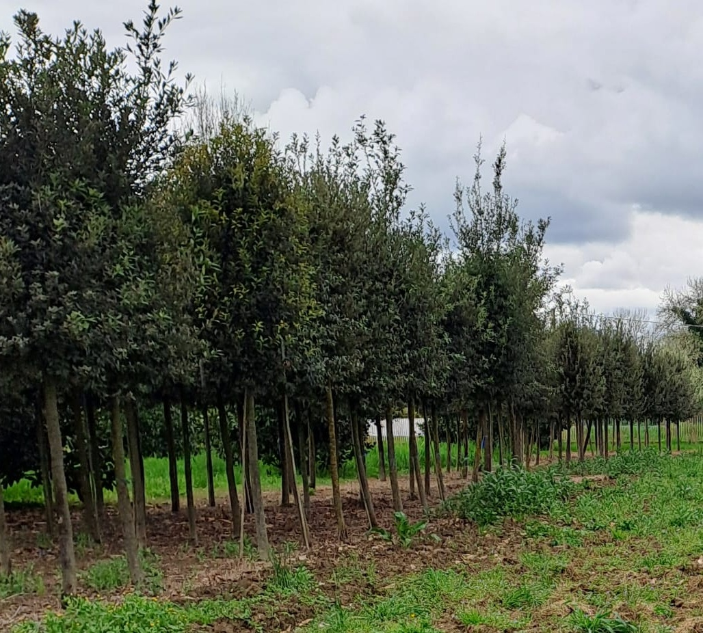

| Scientific Name | Quercus ilex | Authority | Linnaeus |
|---|
| Nome comune | Leccio | Famiglia | Fagaceae |
|---|
| Genere | Quercus | Specie | ilex |
|---|
| Tipo di pianta | Latifoglia sempreverde | Altezza (m) | 20-25 |
|---|
| Foglia | Semplice, da oblunga a ovale, spesso coriacea, margine intero o spinoso (soprattutto negli alberi giovani), tessitura
spessa, coriacea e lucida sulla superficie, verde scura sulla pagina superiore, pallida e lanuginosa in quella inferiore. |
|---|
| Fioritura | Primavera (tipicamente da marzo a maggio), tipo unisessuale (fiori maschili e femminili separati sulla stessa pianta – monoica) |
|---|
| Infiorescenze | maschili: Amenti (fiori maschili in lunghi grappoli pendenti), fiori femminili piccoli, solitari o in gruppo, spesso meno evidenti |
|---|
| Colore | Verde-giallastro | Impollinazione | Anemofila |
|---|
| Tipo di radice | Radice fittonante profonda (nelle piante giovani) con estese radici laterali negli alberi maturi |
|---|
| Specializzazioni adattative e ancoraggio al suolo | Resistente alla siccità, adattato ai terreni mediterranei asciutti; accesso alle falde acquifere profonde; radici forti stabilizzano l'albero in terreni rocciosi o poveri |
|---|
| Suolo | Adattabile: predilige terreni ben drenati, tollera terreni sabbiosi, argillosi, rocciosi e argillosi, da leggermente acidi ad alcalini (pH circa 6,0-8,5), cresce in terreni poveri e carenti di nutrienti; non necessita di fertilizzazione; tollera la siccità una volta attecchita; non ama i terreni impregnati d'acqua; moderata tolleranza alla salinità del suolo.
Uno studio dell'universit@agrave; di Alcala in Spagna suggerisce: Il leccio è indifferente alla natura chimica del terreno, ma la sua tessitura può essere un fattore che influenza ulteriormente il suo sviluppo. Tollera i terreni sabbiosi, ma è più limitato nei terreni limosi o argillosi eccessivamente compatti e in quelli gessosi o salini. |
|---|
| Origine | Bacino mediterraneo dell'Europa meridionale (Spagna, Italia, Francia, Grecia, Portogallo), Africa settentrionale (Marocco, Algeria, Tunisia), parti dell'Asia occidentale |
|---|
| Zone climatiche e altitudine | Sottozone media e fredda del Lauretum nei querceti sempreverdi mediterranei, 0-800 m s.l.m. |
|---|
| Usi | Legname, legna da ardere, 200 specie animali si cibano di ghiande, controllo dell'erosione suolo, ornamentale nelle siepi o come boschetto, habitat per la fauna selvatica. |
|---|
| Frutto | achenio oblungo (ghianda) con la base racchiusa dalla cupola, 1.5–2.5 cm long, 1,5–2,5 cm, verde quando è acerba, diventa marrone quando matura, impiega circa 6–8 mesi per maturare, solitamente matura in autunno, dispersione da animali e gravità.
Il frutto è recalcitrante, il che significa che la perdita di umidità influisce negativamente sulla vitalità. Dalla raccolta alla semina il tenore di umidità non deve scendere al di sotto del 40%. |
|---|
| Germinazione | Le ghiande germinano facilmente in condizioni di umidità; non necessitano di un periodo di dormienza. Le ghiande non germinano in condizioni di siccità e disidratazione. Non recuperano la germinazione se esposte nuovamente all'umidità. |
|---|
| Immagine |
 |
|---|
| Raccolta | Autunno, ottobre-dicembre, quando il seme ha raggiunto la maturità fisiologica. |
|---|
| Modalità di raccolta | Non piu' del 20% delle ghiande a disposizione in alberi distanti tra loro 50 metri. Si raccoglie
il materiale di moltiplicazione nelle stazioni designate nel registro regionale dei materiali di base |
|---|
| Lavorazione | Eliminazione delle cupole, selezione delle ghiande mediante immersione in acqua (si eliminano quelle che galleggiano), asciugatura del seme. |
|---|
| Semina | nelle zone mediterranee la semina può essere effettuata subito dopo la raccolta oppure posticipata mediante
vernalizzazione, stratificazione in terra o torba a basse temperature (4-8°C) fino alla fuoriuscita della radichetta per 0.5-5cm. |
|---|
| Metodo | In contenitore profondo 17 cm (semenzaio) all'esterno in assenza di gelate invernali prolungate. | Substrato | 50% sand + 30% compost + 20% torba e antigerminello(?) |
|---|
| pH | 9 | Correzione | solfato di calcio |
|---|
| Concimazione | Inizia dopo che la ghianda ha esaurito le riserve, bilancia con azoto bazzo N-P-K 5-10-10 nel periodo vegetativo. | Irrigazione | microirrigazione (a goccia), aspersione, etc. Regolare nei periodi più caldi |
|---|
| Profondità di semina | 1-2 volte larghezza del seme | Densità | 100-350 semenzai/mq |
|---|
| Vendita | da 1 a 3 anni di età, 20-100 cm di altezza in contenitore con potature minime e ramo leader dritto. |
|---|
| Piantonaio | dai 2 anni di età con 3 anni di permanenza in piantonaio | Densità | 50 semenzai/mq o in filari con un metro di distanza tragli alberi. |
|---|
| Rinvaso | trapiantare in contenitori più grandi man mano che si sviluppano le radici, man mano che le piante crescono (vasi da 2L → 5L → 10L).
Potare leggermente per modellare e rafforzare il leader centrale. Mantenere i vasi privi di infestanti. Monitorare parassiti e malattie. |
|---|
| Micorizzazione | al rinvaso è possibile effettuare l'inoculo di ectomicorrize, ad esempio iniettare con una siringa l'inoculo di Tuber melanosporum (tartufo nero) in substrato alcalino. |
|---|